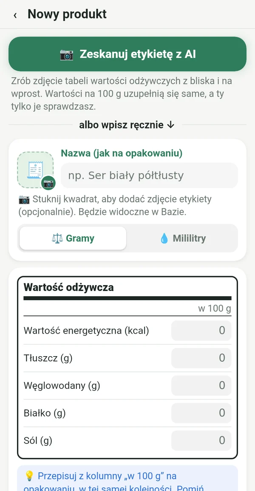
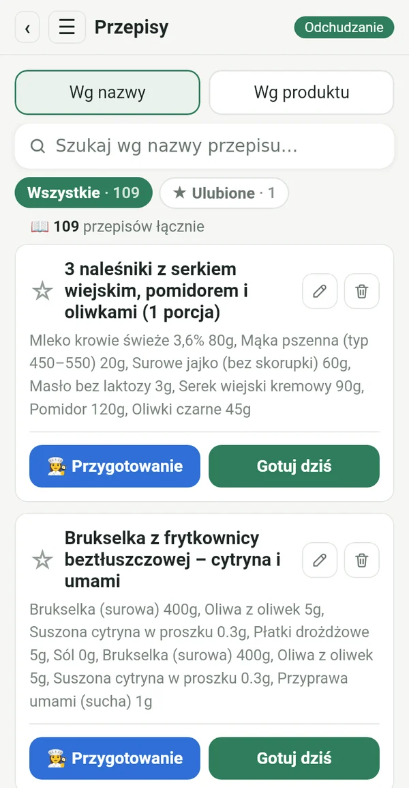
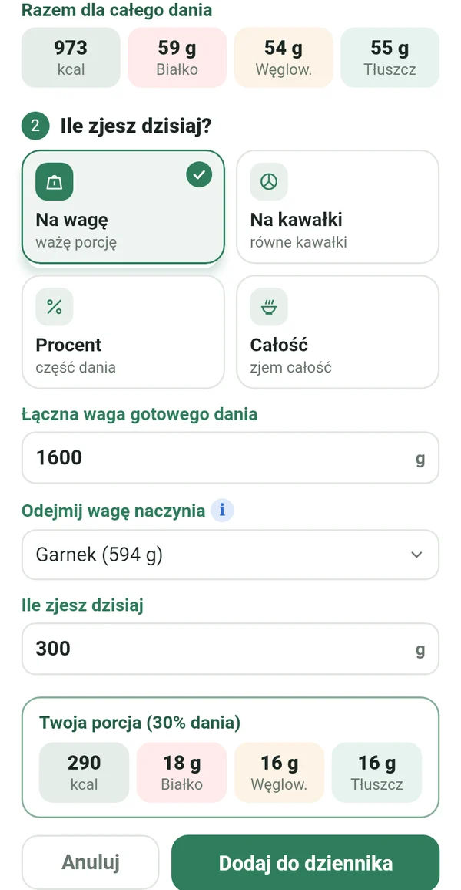
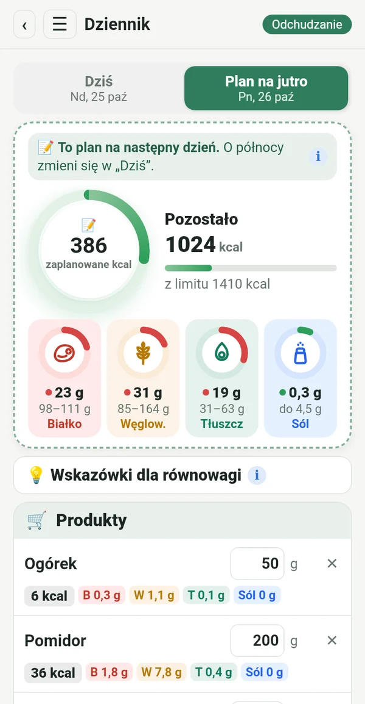
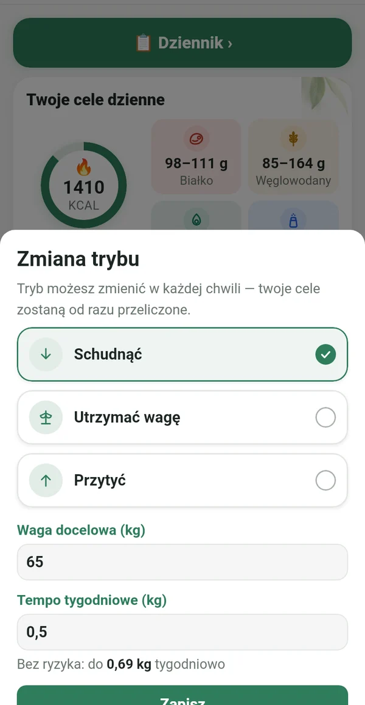
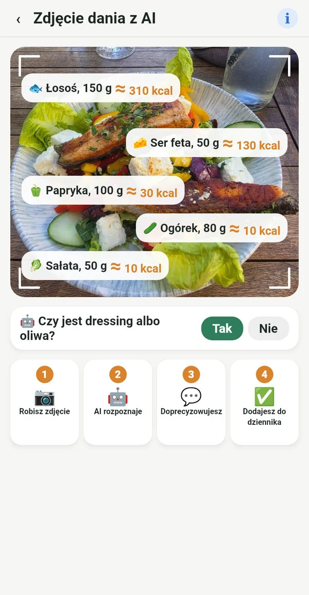

Wszystko, czego potrzebujesz, nic zbędnego

Z etykiety, nie z cudzych baz
Przepisujesz wartości na 100 g z opakowania albo po prostu robisz zdjęcie etykiety. Liczby zgadzają się z tym, co naprawdę jesz.
📷 Zdjęcie etykiety z AI wypełnia pola za Ciebie
Twoja cyfrowa książka kucharska
Przepisy z zeszytu babci, z książek kucharskich na półce i z ulubionych grup, wszystkie w jednym miejscu. Wpisujesz je raz i używasz zawsze.

Dokładna porcja z całego garnka
Ważysz gotowe danie razem z garnkiem. Macrolia odejmuje garnek i liczy, ile dokładnie zjadłaś.

Planujesz, kupujesz, jesz
Już dziś wpisujesz, co zjesz jutro. Kupujesz tylko to, czego potrzebujesz, a o północy plan staje się Twoim dniem.

Odchudzanie, utrzymanie lub przybieranie na wadze
Gdy osiągniesz cel, przechodzisz na „Utrzymać wagę”. Jeśli życie się zmieni, po prostu zmieniasz tryb. Dzienny limit wynika ze wzoru Mifflina-St Jeora i zaleceń klinicznych, w bezpiecznym tempie.

Także poza domem wiesz, co jesz
Robisz zdjęcie talerza, a AI rozpoznaje, co na nim jest. Wartość jest przybliżona i oznaczona ≈. Lepiej w przybliżeniu niż wcale.
Kalorie z ruchu
Przez Health Connect, z telefonu, zegarka lub aplikacji fitness. Ty wybierasz, ile dodać do limitu.
Waga, wykres, raport
Wykres wagi, zdjęcia przed i po tylko dla Ciebie oraz raport w PDF i Excelu.
Wskazówki dla równowagi
Krótkie podpowiedzi, gdy białko lub tłuszcz są poza celem. Pomaga, nie rozkazuje.
Dla każdej, która chce trzymać się planu
Jo-jo nie bierze się z diety. Przychodzi, kiedy przestajesz.
Po porodzie wracasz do swojego rytmu.
Wiek to nie powód, żeby się poddać.
Nawet w restauracji wiesz, co zamówić.
Kto dokładnie trzyma się planu, dostaje dokładny wynik.
Twoje dane są tylko Twoje
Wszystko zostaje na Twoim telefonie. Bez rejestracji, reklam i śledzenia. Zdjęcie do analizy AI jest wysyłane tylko do obliczeń i nie jest przechowywane.
Subskrypcja
Subskrypcja miesięczna lub roczna, obie z 7 dniami za darmo. Anulujesz w każdej chwili w Google Play.
W 14 językach, z jasnym i ciemnym motywem.
Pytania
Kiedy aplikacja będzie dostępna?
Przygotowujemy premierę w Google Play. Napisz do nas, a damy znać, gdy będzie gotowa.
Czy jest wersja na iPhone'a?
Na razie tylko na Androida. Wersję na iPhone'a planujemy później.
Dlaczego nie ma skanera kodów kreskowych?
Bazy kodów kreskowych wypełniają użytkownicy i często są błędne lub nieaktualne. W Macrolii każda wartość pochodzi z etykiety, dlatego liczby są dokładne.
Ile zdjęć z AI mogę zrobić?
Do 100 zdjęć miesięcznie, łącznie dla etykiet i dań.